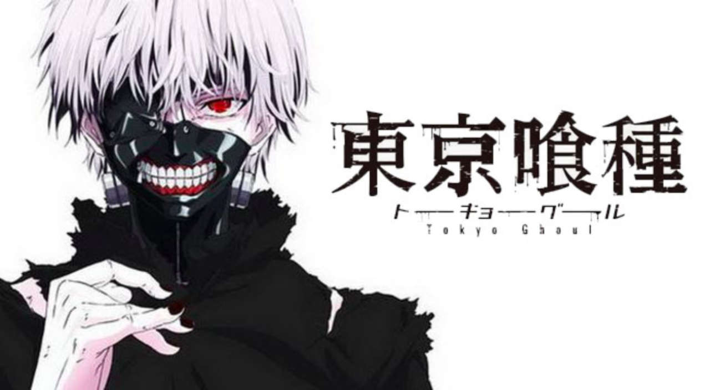

Top Gore/Bloody
Here are animes who are the best in the genre of Gore

Parasyte
Parasyte (Japanese: 寄生獣 Hepburn: Kiseijū, lit. "Parasitic Beasts") is a science fiction horror manga series written and illustrated by Hitoshi Iwaaki, and published in Kodansha's Afternoon magazine from 1988 to 1995. The manga was published in North America by first Tokyopop, then Del Rey, and finally Kodansha Comics. The manga has been adapted into two live-action films in Japan in 2014 and 2015. An anime television series adaptation by Madhouse, titled Parasyte -the maxim- (寄生獣 セイの格率 Kiseijū Sei no Kakuritsu), aired in Japan between October 2014 and March 2015.[3] The English-language dub aired on Adult Swim's Toonami block in America between October 2015 and April 2016. Parasyte centers on a male 17-year-old high school student named Shinichi Izumi, who lives with his mother and father in a quiet neighborhood in Tokyo, Japan. One night, strange worm-like creatures called Parasites appear on Earth, taking over the brains of human hosts by entering through their ears or noses. One Parasite attempts to crawl into Shinichi's ear while he sleeps, but fails as Shinichi is wearing headphones, and enters his body by burrowing into his arm instead. In the Japanese version, it takes over his right hand and is named Migi (ミギー), after the Japanese word for 'right'; Tokyopop's version-(English dub), in which the images are flipped horizontally, has the Parasite take over Shinichi's left hand and it is named Lefty.
Because Shinichi was able to prevent Migi from travelling further up into his brain, both beings retain their separate intellect and personality. As the duo encounter other Parasites, they capitalize on their strange situation and gradually form a strong bond, working together to survive. This gives them an edge in battling other Parasites who frequently attack the pair upon realization that Shinichi's human brain is still intact. Shinichi feels compelled to fight other Parasites, who devour humans as food, while enlisting Migi's help.

Tokyo Ghoul
Tokyo Ghoul not only a anticipated incoming sequel but it is also one of the best, goriest anime out there. Tokyo Ghoul (Japanese: 東京喰種トーキョーグール Hepburn: Tōkyō Gūru) is a Japanese dark fantasy manga series by Sui Ishida. It was serialized in Shueisha's seinen manga magazine Weekly Young Jump between September 2011 and September 2014 and has been collected in fourteen tankōbon volumes as of August 2014. A sequel titled Tokyo Ghoul:re began serialization in the same magazine in October 2014 and a prequel titled Tokyo Ghoul Jack ran online on Jump Live.
A 12-episode anime television series adaptation by studio Pierrot aired on Tokyo MX between July and September 2014. A 12-episode second season, Tokyo Ghoul √A (pronounced Tokyo Ghoul Root A), which follows an original story, began airing on January 8, 2015, and concluded on March 26, 2015. In North America, Viz Media is publishing the manga while Funimation has licensed the anime series for streaming and home video distribution. The anime was obtained by Madman Entertainment for digital distribution in Australia.
An anime adaptation based on the sequel manga Tokyo Ghoul:re has been announced and will premiere in 2018.[4]
A live-action film based on the manga was released in Japan on July 29, 2017. The story follows Ken Kaneki, a college student who barely survives a deadly encounter with Rize Kamishiro, his date who reveals herself as a ghoul. He is taken to the hospital in critical condition. After recovering, Kaneki discovers that he underwent a surgery that transformed him into a half-ghoul. This was accomplished because some of Rize's organs were transferred into his body, and now, like normal ghouls, he must consume human flesh to survive. The ghouls who manage the coffee shop "Anteiku" take him in and teach him to deal with his new life as a half-ghoul. Some of his daily struggles include fitting into the ghoul society, as well as keeping his identity hidden from his human companions.
The prequel series Tokyo Ghoul [Jack] follows the youths of Kishō Arima and Taishi Fura, two characters from the main series who become acquainted when they join forces to investigate the death of Taishi's friend by the hands of a ghoul, leading to Taishi eventually following Arima's path and joining the CCG (Commission of Counter Ghoul), the federal agency tasked into dealing with crimes related to ghouls as well.
The sequel series Tokyo Ghoul:re follows an amnesiac Kaneki under the new identity of Haise Sasaki (the result of horrific brain damage sustained from Kishō Arima). He is the leader of a special team of CCG investigators called "Quinx Squad" that underwent a similar procedure as his, allowing them to obtain the special abilities of Ghouls in order to fight them, but still being able to live as normal humans.